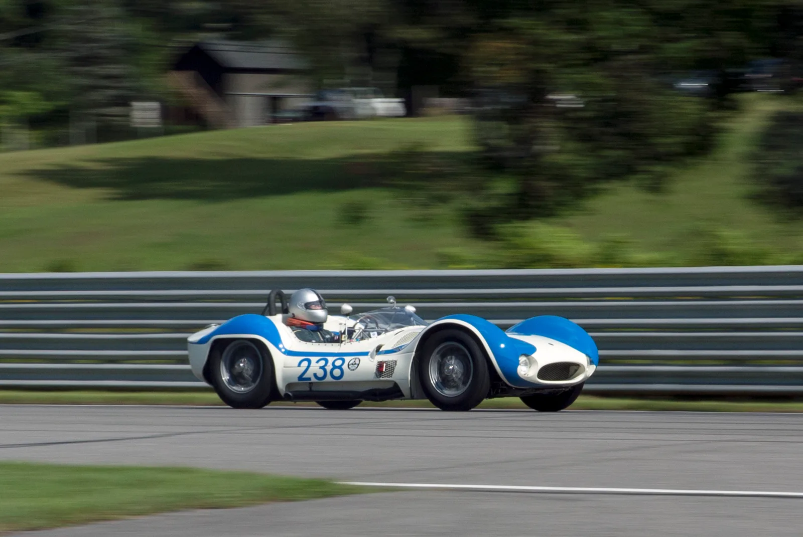
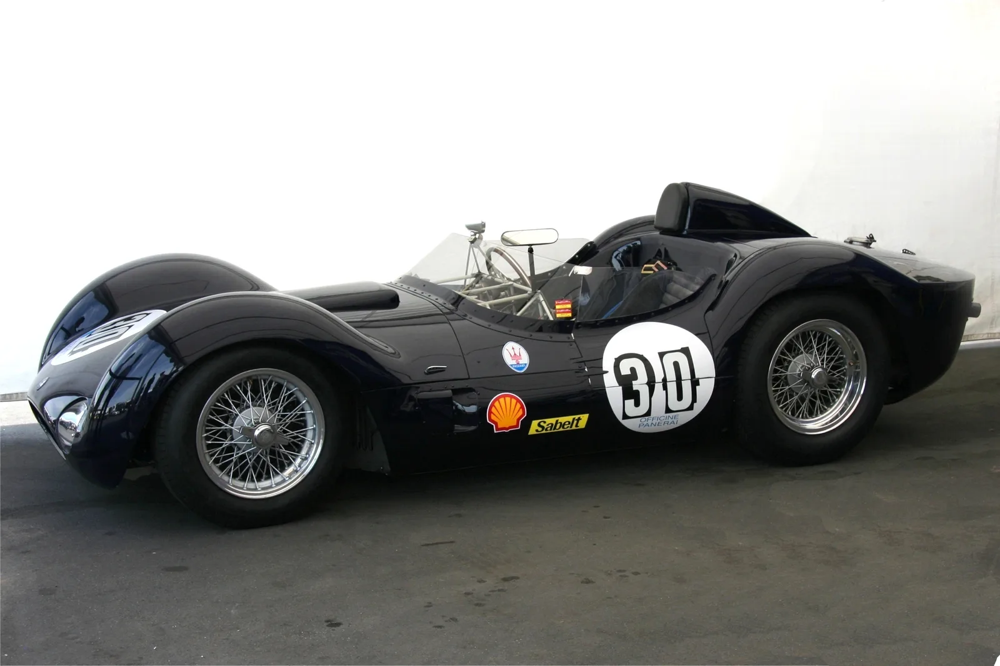
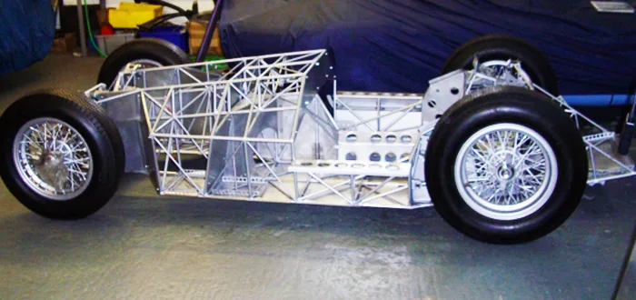

▲ 1959년형 마세라티 티포 61 '버드케이지'가 미국 페블 비치 경매에서 424만 달러(약 57억 원)에 낙찰됐다 ⓒ Wikimedia Commons
1. 57억 원, 예상가를 뛰어넘은 낙찰가
2026년 8월 14일, 미국 캘리포니아에서 열린 구딩 크리스티 페블 비치 경매(Gooding Christie's Pebble Beach Auction)에서 1959년형 마세라티 티포 61 '버드케이지'가 424만 달러, 우리 돈으로 약 57억 원에 낙찰됐습니다.
이 경매는 매년 8월 페블 비치 컨셉 델레강스와 함께 열리는 '몬터레이 카 위크'의 핵심 행사 중 하나입니다. 사전 예상가는 40억~54억 원 수준이었는데, 실제 낙찰가는 이를 훌쩍 넘어섰습니다.
| 차량 | 1959년형 마세라티 티포 61 '버드케이지' |
|---|---|
| 행사 | 구딩 크리스티 페블 비치 경매 (2026년 8월 14일) |
| 사전 예상가 | 약 40억~54억 원 |
| 낙찰가 | 424만 달러 (약 57억 원) |
| 기록 | 티포 61 모델 역대 경매 최고가 |
낙찰가가 예상가 상단을 크게 웃돌았다는 점은 이 차량이 단순한 올드카가 아니라는 뜻입니다. 희소성, 레이싱 기록, 보존 상태가 동시에 맞아떨어졌을 때 클래식 레이싱카 경매에서 종종 나타나는 결과입니다.
2. 프론트엔진 레이싱카의 마지막 세대, 티포 61
티포 61은 1959년, 국제자동차연맹(FIA)의 3리터급 스포츠카 규정에 맞춰 개발된 마세라티의 레이싱카입니다. 앞서 나온 2리터급 티포 60의 확장판 성격을 가지면서도, 섀시 구조는 완전히 새로 짰습니다.
당시는 엔진을 차체 뒤쪽, 운전석과 뒷바퀴 사이에 두는 미드십 레이아웃이 막 레이싱카에 자리 잡기 시작하던 시기였습니다. 티포 61은 엔진을 앞쪽에 두는 전통적인 프론트엔진 구조를 택하면서도, 가벼운 차체와 정교한 서스펜션 세팅으로 경쟁력을 확보했습니다. 프론트엔진 스포츠 레이싱카로서는 사실상 마지막 세대에 속하는 모델로 평가받습니다.
실전에서는 미국의 프라이빗 레이싱팀 카모라디 USA(Camoradi USA)가 이 차를 앞세워 세계 스포츠카 챔피언십을 누볐습니다. 스털링 모스, 댄 거니 같은 당대 최고의 드라이버들이 스티어링을 잡았고, 총 17대만 만들어진 희소성은 지금까지도 이 모델의 가치를 떠받치는 핵심 요소입니다.

▲ 독일 뉘르부르크링에서 열린 AvD 올드타이머 그랑프리에 전시된 티포 61. 와이어 휠과 리벳으로 마감된 알루미늄 패널이 1950년대 레이싱카의 제작 방식을 그대로 보여준다 ⓒ Wikimedia Commons
3. 왜 '버드케이지'라 불렸나 — 200개의 강철 튜브
티포 61에 '버드케이지(새장)'라는 별명이 붙은 이유는 섀시 구조 때문입니다. 마세라티의 엔지니어 줄리오 알피에리(Giulio Alfieri)가 설계한 이 프레임은 지름이 얇은 강철 튜브 약 200개를 그물처럼 촘촘하게 용접해 만들었습니다.
일반적인 사다리형 프레임이나 모노코크 대신 이런 트러스 구조를 택한 이유는 단순합니다. 같은 강성을 유지하면서 무게를 극단적으로 줄이기 위해서입니다. 실제로 티포 61의 차체 무게는 600kg에 불과했습니다. 여기에 2,890cc 4기통 엔진이 250마력을 냈으니, 무게 대비 출력에서 당대 최상급 성능을 확보할 수 있었습니다.
| 엔진 | 2,890cc 직렬 4기통 |
|---|---|
| 최고출력 | 250마력 |
| 차체 무게 | 600kg |
| 최고속도 | 285km/h |
| 섀시 | 강철 튜브 약 200개로 짠 스페이스프레임 ('버드케이지') |
| 설계 | 줄리오 알피에리 |
| 생산 대수 | 17대 |
차체를 열면 그대로 드러나는 이 뼈대 구조는 당시로서는 파격적이었지만, 제작 공수가 많이 들어 대량 생산에는 적합하지 않았습니다. 그럼에도 이 구조는 이후 스페이스프레임 설계에 영향을 준 상징적인 사례로 남아 있습니다.

▲ 패널을 걷어낸 티포 61의 섀시. 가느다란 강철 튜브가 촘촘하게 짜인 모습이 새장을 닮았다 해서 '버드케이지'라는 별명이 붙었다 ⓒ Wikimedia Commons
4. 뉘르부르크링 2연패와 마세라티 100년 레이싱 유산
티포 61의 진짜 가치는 트로피에서 나옵니다. 1960년과 1961년, 독일 뉘르부르크링에서 열린 1000km 내구레이스에서 2년 연속 종합 우승을 차지했습니다. 서킷 자체가 까다롭기로 악명 높은 '그린 헬(Green Hell)'이었던 만큼, 이 연속 우승은 차량의 완성도와 신뢰성을 동시에 증명한 기록입니다.
이 우승 기록은 2026년 현재 마세라티가 강조하는 '레이싱 100주년' 서사와도 맞닿아 있습니다. 마세라티는 1926년 4월 25일, '티포 26'을 앞세워 이탈리아 타르가 플로리오에 출전하며 처음으로 삼지창 모양의 트라이던트 엠블럼을 차체에 달았습니다. 이 대회에서 우승하며 브랜드 역사의 첫 페이지를 레이싱으로 채웠습니다.
마세라티는 이 100주년을 기념해 당시의 승리를 상징하는 '엘도라도' 특별 리버리를 현행 레이싱카 GT2 스트라달레에 적용해 공개하기도 했습니다. 티포 26에서 티포 61을 거쳐 오늘의 GT2 스트라달레까지, 100년째 이어지는 레이싱 헤리티지의 연속선상에 이번 경매가 있는 셈입니다.

▲ 마세라티는 1939·1940년 인디애나폴리스 500을 2년 연속 제패한 8CTF '보일 스페셜'을 비롯해, 창립 초기부터 레이싱을 브랜드 정체성의 핵심으로 삼아왔다 ⓒ Wikimedia Commons
5. 클래식 레이싱카, 왜 계속 몸값이 오르나
티포 61의 이번 낙찰가는 개별 사례이지만, 클래식 레이싱카 시장 전반의 흐름과도 무관하지 않습니다. 매년 8월 페블 비치에서 열리는 몬터레이 카 위크는 구딩 앤드 컴퍼니, RM 소더비, 본햄스 같은 주요 경매사들이 한자리에 모이는 자리로, 전 세계에서 가장 큰 클래식카 거래가 이뤄지는 무대입니다.
이런 자리에서 프론트엔진 시대를 대표하는 1950~60년대 스포츠 레이싱카, 특히 실제 우승 기록을 가진 차량은 꾸준히 상승세를 보여왔습니다. 이유는 세 가지로 요약됩니다.
| 요소 | 내용 |
|---|---|
| 희소성 | 티포 61처럼 생산 대수가 극히 적은 모델 |
| 레이스 이력(프로비넌스) | 실제 우승·입상 기록이 남아있는 개체 |
| 주행 가능성 | 박물관 전시용이 아니라 지금도 히스토릭 레이스에 출전 가능한 상태 |
실제로 이번에 낙찰된 개체 역시 최근까지 미국 라임록 파크 히스토릭 레이스 등에서 실주행 이력이 확인되는 차량입니다. '보관된 골동품'이 아니라 '지금도 달리는 레이싱카'라는 점이 경매가에 그대로 반영됐다고 볼 수 있습니다.
6. 정리
1959년형 마세라티 티포 61 '버드케이지'가 미국 페블 비치 경매에서 424만 달러(약 57억 원)에 낙찰되며 해당 모델 역대 최고가를 새로 썼습니다. 사전 예상가 40억~54억 원을 크게 웃도는 결과였습니다.
200개의 강철 튜브로 짠 스페이스프레임 섀시, 600kg의 가벼운 차체, 1960·1961년 뉘르부르크링 1000km 2년 연속 우승 기록, 단 17대라는 생산 대수까지 — 이 모든 요소가 겹치며 만들어낸 결과입니다.
공교롭게도 이번 낙찰은 마세라티가 레이싱 100주년을 기념하는 해에 나왔습니다. 1926년 타르가 플로리오부터 이어진 마세라티의 레이싱 헤리티지가, 100년이 지난 지금 경매장의 숫자로 다시 한번 증명된 셈입니다.